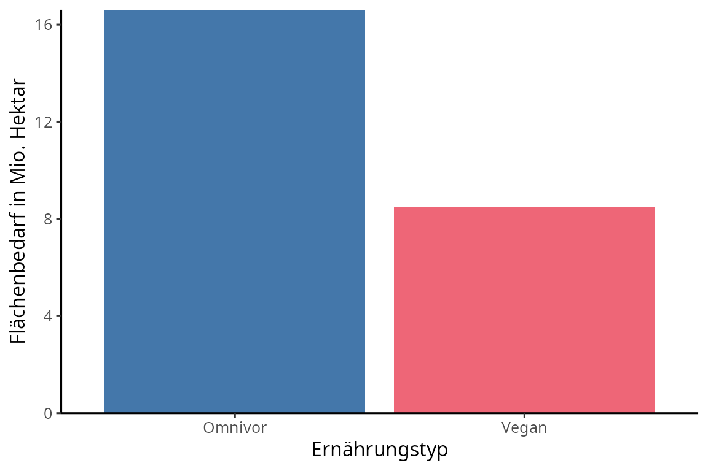
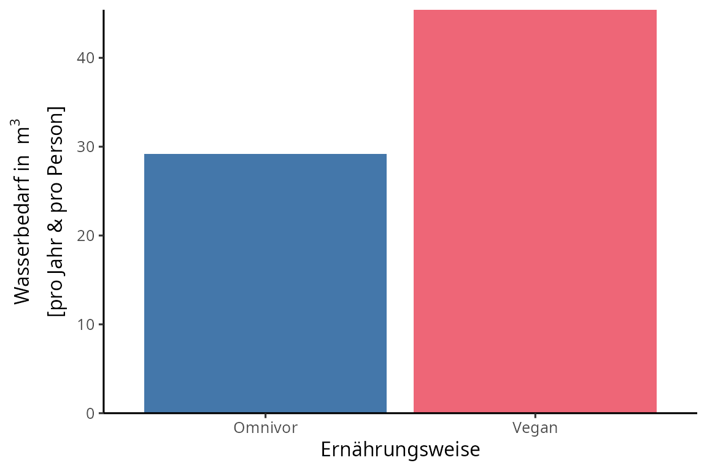
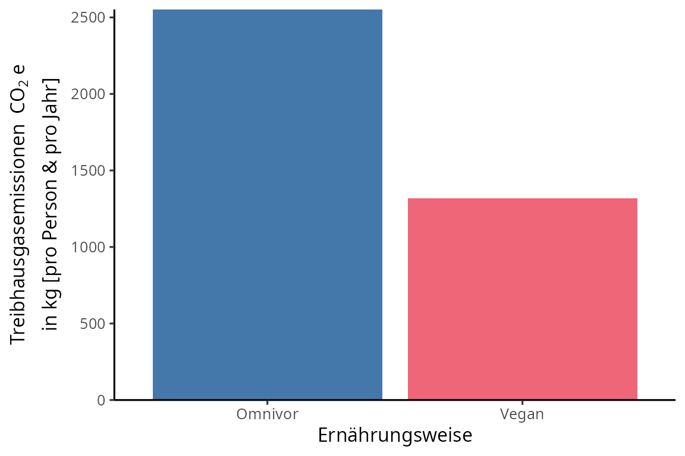
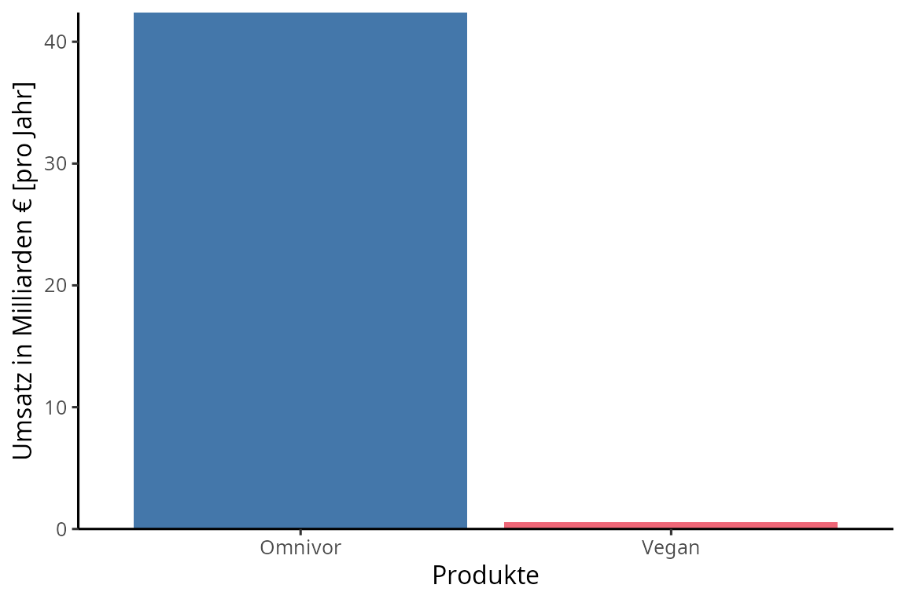
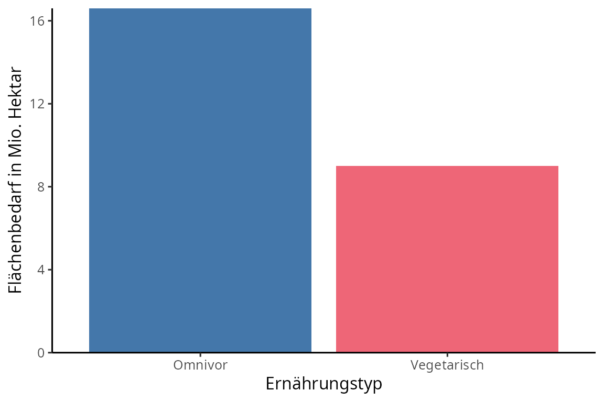
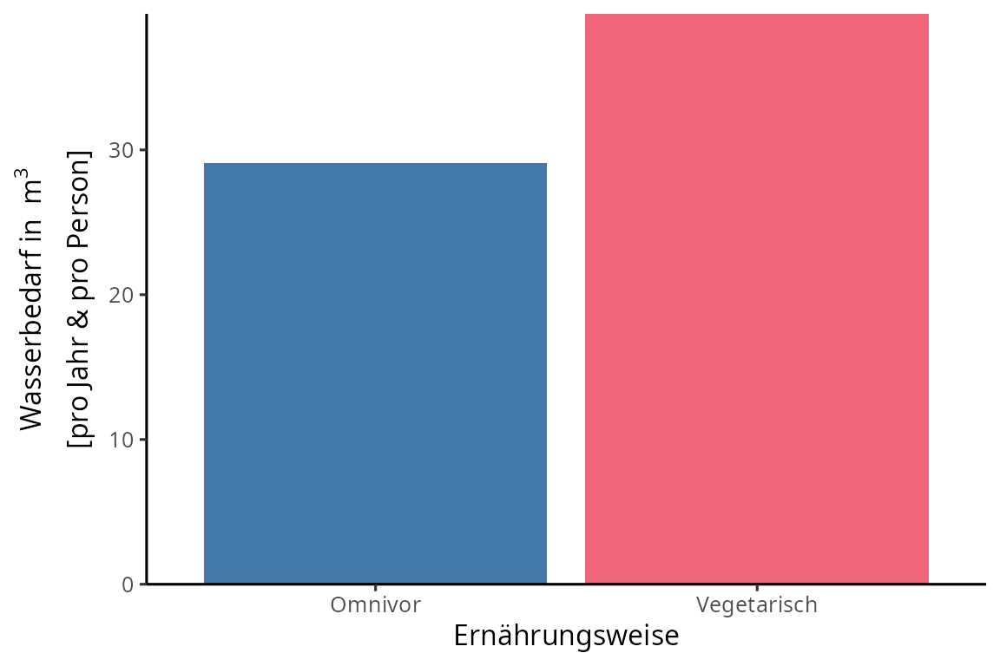
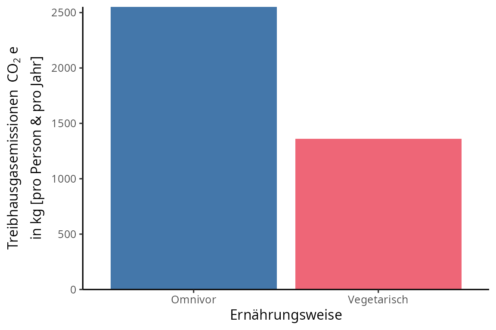
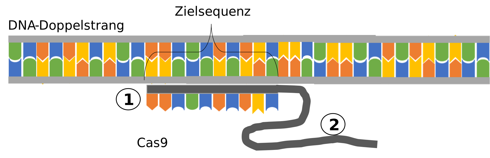

2 Ernährung und Ernährungsformen
2.1 Ominvor vs. Vegan
Die Treibhausgasemissionen der Landwirtschaft sollen drastisch reduziert werden, da der Ernährungssektor für bis zu 37 % der weltweit produzierten Emissionen verantwortlich ist. Die Reduktion soll dazu beitragen, dass Deutschland bis 2045 die Klimaneutralität erreicht. Aktuell wird in der Politik diskutiert, ob in den Schulmensen auf die Verwendung tierischer Produkte verzichtet werden soll. Konkret wird beraten, ob
- weiterhin omnivore Gerichte oder
- ausschließlich vegane Gerichte
in der Schulmensa angeboten werden sollen.
Diskutiere die vorgeschlagenen Ernährungsangebote vor dem Hintergrund des Klimawandels auf der Basis von mindestens drei Kriterien aus den Materialien der folgenden Seiten.
Hinweise
- Empfiehl in deiner Einleitung eine Handlungsoption.
- Formuliere in jedem Argument eine Behauptung aufbauend auf einem Kriterium, nenne passende Fakten und erkläre, warum die Fakten deine Behauptung stützen.
- Berücksichtige in jedem Argument alle Handlungsoptionen.
- Vergleiche in deinem Schluss die Bedeutsamkeit der Kriterien für deine Entscheidung.
Kriterienübersicht
| Kriterium | Omnivore Ernährung | Vegetarische Ernährung |
|---|---|---|
| Flächenbedarf | 16,6 Mio. ha | 8,5 Mio. ha |
| Wasserbedarf [pro Person & pro Jahr] | 29,1 m3 | 45,4 m3 |
| Treibhausgasemissionen in CO2e [pro Person & pro Jahr] | 2552 kg | 1315 kg |
Nährstoffe
|
Nährstoffe
|
Nährstoffe
|
| Erkrankungen | höheres Risiko | niedrigeres Risiko |
| Wirtschaft: Umsatz |
Fleisch: 42,4 Milliarden € |
Fleischersatz: 537,4 Millionen € |
| Kosten | Fleisch: günstiger | Fleischersatz: teurer |
| Ethik | Massentierhaltung | Ernährungssicherheit |
| Kultur & Religion |
|
|
Begrifflichkeiten
- Eine omnivore Ernährungsweise setzt sich aus pflanzlichen und tierischen Lebensmitteln zusammen.
- Eine vegane Ernährungsweise sieht ausschließlich pflanzliche Lebensmittel vor.
Kriterium 1: Flächenbedarf
Die landwirtschaftliche Nutzung nimmt über ein Drittel der für Menschen bewohnbaren Flächen in Anspruch. Durch die Anpassung unserer Essgewohnheiten kann der Bedarf an landwirtschaftlichen Nutzflächen stark beeinflusst werden. Beispielsweise dienen weltweit 83 % der landwirtschaftlichen Nutzflächen dem Anbau von Tiernahrung. Deutschlands Gesamtfläche beträgt 35,8 Millionen Hektar. Die aktuelle Ernährungsweise der Deutschen erfordert 16,6 Millionen Hektar landwirtschaftliche Nutzfläche, das entspricht 45 % der Gesamtfläche Deutschlands. Im Vergleich zu der aktuellen durchschnittlichen Ernährungsweise würde eine rein vegane Ernährung den Flächenbedarf um bis zu 49 % auf 8,5 Millionen Hektar reduzieren.
Kriterium 2: Wasserbedarf
Die Mehrheit der Deutschen ernährt sich omnivor. Ihre derzeitige durchschnittliche Ernährung weist im Vergleich zu einer rein veganen Ernährung einen geringeren Wasserbedarf für die Bewässerung auf. Die Abbildung 2 zeigt den Wasserbedarf je Ernährungsweise. Dieser wird in Kubikmetern (m3) pro Person und pro Jahr angegeben. Allerdings gilt es hierbei zu beachten, dass nur die Wassermenge für die künstliche Bewässerung exklusive des Regenwassers und Trinkwassers für die Tiere angegeben ist. Zudem erfolgte die Berechnung unter der Annahme gleichbleibender Handelsströme wie bei der aktuellen Ernährungsweise. Fleisch und weitere tierische Produkte werden vorrangig in Regionen produziert, in denen genügend Wasser vorhanden ist. Hingegen werden pflanzliche Produkte häufig in niederschlagsarmen Gebieten unter der Verwendung teilweise ineffizienter Bewässerungstechniken angebaut.

Kriterium 3: Treibhausgasemissionen / Klimawirkung und Reduktionspotentiale
Für einen Großteil (21 – 37 %) der globalen Treibhausemissionen ist unsere Ernährung verantwortlich. 69 % der ernährungsbedingten Treibhausgasemissionen sind auf tierische Produkte zurückzuführen. Die Abbildung 3 zeigt die Klimawirkung je Ernährungsweise pro Person und Jahr. Das Kohlenstoffdioxid-Äquivalent (CO2e) ist eine Maßeinheit zur Vereinheitlichung der Klimawirkung der unterschiedlichen Treibhausgase. Durch eine Umstellung der omnivoren auf eine vegane Ernährungsweise können die Treibhausgasemissionen um 1237 kg Kohlenstoffdioxid-Äquivalent pro Kopf und pro Jahr gesenkt werden. Die Abnahme der Treibhausgasemissionen ist auf niedrigere Methanemissionen durch Nutztiere aber ebenfalls auf Landnutzungsänderungen durch eine geringere Nachfrage nach Futtermitteln zurückzuführen.
Es gibt aber auch Möglichkeiten, durch Veränderungen im Futtermittel die Treibhausgasemissionen in der Viehhaltung zu reduzieren. Die Futterzusammensetzung kann angepasst werden oder die Zugabe von Zusatzstoffen kann die Methanproduktion im Verdauungstrakt der Tiere beeinflussen. Insekten oder Algen könnten als nachhaltige alternative Futterkomponenten verwendet werden. Algen beispielsweise produzieren bioaktive Substanzen, die den Methanausstoß verringern könnten. Zudem sind Algen gute Proteinlieferanten und könnten als Soja-Alternativen eingesetzt werden. Eine Studie zeigt, dass die Supplementierung von der roten Makroalge (Seetang) Asparagopsis spp. zum Viehfutter die Methanproduktion im Darm von Wiederkäuern um bis zu 80 % verringert.

Kriterium 4: Nährstoffe/Gesundheit
Nährstoffe
Omega-3-Fettsäuren: Omega-3-Fettsäuren sind wichtig für den Stoffwechsel und die Produktion von Gewebshormonen und können Entzündungen entgegenwirken. Auch können sie sich positiv auf die Konzentrationsfähigkeit auswirken. Es gibt verschiedene Formen von Omega-3-Fettsäuren. Eine dieser Formen kommt nur in pflanzlichen Lebensmitteln vor und ist eine essentielle Fettsäure. Essentiell bedeutet, dass der Körper die Fettsäuren nicht selbst herstellen kann. Andere Formen der Omega-3-Fettsäuren, die in tierischen Nahrungsmitteln (vor allem in Fischen und Krebstieren) vorkommen, sind nicht essentiell. Sie können in geringen Mengen im menschlichen Körper aus der Art der Fettsäure, die in pflanzlichen Lebensmitteln vorhanden ist, hergestellt werden.
Vitamin B12: Das Vitamin B12 ist für die Bildung und Reifung roter Blutkörperchen sowie für eine normale Funktion des Nervensystems notwendig. Es ist in tierischen Lebensmitteln vorhanden. In pflanzlichen Nahrungsmitteln kommt es natürlicherweise nicht vor.
Eisen: Das Spurenelement Eisen ist wichtig für die Sauerstoffversorgung, den Energiestoffwechsel und die Immunfunktion des menschlichen Körpers. Die Aufnahme erfolgt im Dünndarm. Besonders dunkelrotes Fleisch wie Rind, Kalb, Wild und Innereien enthalten besonders viel Eisen. Der Vorteil hierbei ist, dass das Eisen in der zweiwertigen Form (Fe2+) vorliegt und vom Körper gut aufgenommen werden kann. Es weist also eine höhere Bioverfügbarkeit auf und ist unabhängig von Umwandlungsprozessen. Im Gegensatz dazu enthalten pflanzliche Lebensmittel dreiwertiges Eisen (Fe3+). Um diese Form des Eisens verwerten zu können, sind zusätzliche Schritte erforderlich. Das dreiwertige Eisen muss im Dünndarm erst in zweiwertiges Eisen umgewandelt werden, da der für die Aufnahme zuständige Transporter nur zweiwertige Eisenionen befördern kann. Für diese Umwandlung ist die Anwesenheit eines Enzyms erforderlich. Zudem ist zu beachten, dass einige pflanzliche Lebensmittel Hemmstoffe, wie z. B. Tannin, Phosphat oder Oxalsäure enthalten, welche die Eisenaufnahme beeinträchtigen.
Eine Supplementierung von Omega-3-Fettsäuren, Vitamin B12 und Eisen als Nahrungsergänzungsmittel ist beispielsweise in Form von Tabletten oder auch in flüssiger Form möglich. Allerdings sollte zuvor die Notwendigkeit einer zusätzlichen Einnahme mittels eines Blutbildes ärztlich überprüft werden.
Gesundheit
Ein hoher Konsum von Fleisch, besonders rotem und verarbeitetem Fleisch kann sich negativ auf die Gesundheit auswirken. Zu rotem Fleisch zählen beispielsweise Rind, Kalb, Schwein und Wild. Ein übermäßiger Verzehr kann Darmkrebs begünstigen, da die Aufnahme von zu viel Eisen die Zellen schädigen könnte. Enthaltene gesättigte Fettsäuren und Cholesterin können den Blutfettspiegel erhöhen und zu einer Begünstigung von Herz-Kreislauf-Erkrankungen führen. Hingegen kann der Verzehr von Obst, Gemüse und Getreide das Risiko für entzündliche Erkrankungen sowie Diabetes Typ 2 reduzieren.
Kriterium 5: Wirtschaft
Arbeitsplätze
Im Jahr 2021 waren im Schlachterei und Fleischverarbeitenden Gewerbe 151.500 Menschen beschäftigt. Im Gegensatz zum Jahr 2020 stieg die Zahl von 128.400 um 18 %. Jedoch ist diese Zunahme nicht mit einem Anstieg des Fleischkonsums und einem damit zusammenhängenden Anstieg der Beschäftigten zu erklären. Vielmehr lässt sich der Anstieg der in diesem Sektor beschäftigten Menschen dadurch erklären, dass Leiharbeiter feste Verträge erhalten haben. Im Jahr 2020 waren im gesamten landwirtschaftlichen Sektor 937.900 Personen beschäftigt.
Betriebe
Von insgesamt 262.800 landwirtschaftlichen Betrieben in Deutschland wurden in 168.800 Betrieben Tiere gehalten. Dies betrifft also mit einem Anteil von 64 % den Großteil der Betriebe. Die Zahlen beziehen sich auf das Jahr 2020.
Umsatz, Produktion & Export
Der Wert der im Jahr 2022 produzierten Fleischerzeugnisse betrug 42,4 Milliarden Euro. Hingegen betrug der Wert der Fleischersatzprodukte nur 537,4 Millionen Euro (siehe Abbildung 4). Damit war der Wert der Fleischprodukte fast 80-Fach so hoch wie der der Fleischersatzprodukte. Die Menge des im Jahr 2022 erzeugten Fleisches betrug 7,0 Millionen Tonnen, während die Menge der Fleischersatzprodukte nur 104.300 Tonnen betrug. Im Vergleich zum Jahr 2021 ist der Wert der Fleischprodukte jedoch gesunken und der Fleischersatzprodukte gestiegen. Es ist zu beachten, dass die Fleischersatzprodukte nicht nur vegane, sondern auch vegetarische Erzeugnisse enthalten. 2022 wurden fast 2,9 Millionen Tonnen an Fleisch und Fleischwaren exportiert. Das entspricht einem Rückgang von 6,9 % im Vergleich zum Vorjahr. Ein Grund für die Abnahme der Exportmenge ist beispielsweise die Einfuhrbeschränkung von Abnehmerländern wie China und ein weiterer Grund die Abnahme des Viehbestandes in Deutschland. Ein Export von Fleischersatzprodukten findet in keinem nennenswerten Umfang statt.

Kriterium 6: Konsum & Preise
Auch wenn in Deutschland seit Jahren immer weniger Fleisch gegessen wird, lag der Konsum bei 55 kg pro Person und pro Jahr (2021). Der Konsum von Fleischersatzprodukten dagegen betrug im selben Zeitraum nur 0,44 kg pro Kopf und pro Jahr. Auch hier ist zu beachten, dass die Fleischersatzprodukte nicht nur vegane, sondern auch vegetarische Erzeugnisse enthalten. Der Preis von Fleischprodukten ist häufig niedriger als der von vergleichbaren Ersatzprodukten. Das kann zum Teil dadurch erklärt werden, dass tierische Produkte mit einem ermäßigten Steuersatz von 7 % besteuert werden, während die meisten Alternativen, die nicht zu den Grundnahrungsmitteln gehören, mit einer Mehrwertsteuer von 19 % besteuert werden. Zudem fließt ein großer Teil der EU-Subventionen, welche die Landwirte erhalten, in die Tierproduktion.
Kriterium 7: Ethik
Ein ethisches Argument gegen den Konsum von Fleisch bezieht sich auf den Tierschutz. Moderne Schlachtungen und Massentierhaltungen werden häufig als unethisch angesehen. Die Tiere werden teils in überfüllten Ställen und unter Bedingungen gehalten, die Stress auslösen und die Entstehung von Krankheiten begünstigen. Der damit verbundene erhöhte Einsatz von Antibiotika treibt das Entstehen von antibiotikaresistenten Keimen voran. Auch bei den Schlachtungen werden teils schmerzhafte Praktiken angewandt. Eine vegane Ernährung kann zudem auch das Leid der Menschen reduzieren. Je mehr tierische Produkte konsumiert werden, desto mehr Menschen leiden an Hunger, da ein Großteil der Ernten nicht für den menschlichen Verzehr verwendet wird, sondern an Tiere verfüttert wird. Dies ist mit einem Wertverlust verbunden, denn für 100 Kalorien der Nutzpflanzen erhält man nur 17 bis 30 Kalorien Fleisch.
Kriterium 8: Kultur & Religion
Auch Kulturen und Religionen sind mit der Ernährungsweisen verbunden. Bei einigen Zeremonien spielen auch tierische Produkte eine zentrale Rolle. In den USA wird am Thanksgiving-Tag traditionell Truthahn zubereitet. In einigen Religionen werden Tiere geopfert, um Geister und Götter zu besänftigen. Im Islam und Judentum gibt es spezielle Vorschriften für die Schlachtung und den Verzehr von Fleisch. Gästen Fleisch zu servieren, ist in einigen Religionen ein Zeichen der Wertschätzung und des Respekts. Bei einigen Neujahrs- oder Hochzeitsbräuchen werden aber auch vegane Lebensmittel verwendet. Eine komplett vegane Ernährungsweise würde dennoch zu einem Verlust oder zumindest zu einer Änderung einiger traditioneller Rituale führen.
2.2 Ominvor vs. Vegetarisch
Die Treibhausgasemissionen der Landwirtschaft sollen drastisch reduziert werden, da der Ernährungssektor für bis zu 37 % der weltweit produzierten Emissionen verantwortlich ist. Die Reduktion soll dazu beitragen, dass Deutschland bis 2045 die Klimaneutralität erreicht. Aktuell wird in der Politik diskutiert, ob in den Schulmensen auf die Verwendung tierischer Produkte verzichtet werden soll. Konkret wird beraten, ob
- weiterhin omnivore Gerichte oder
- ausschließlich vegetarische Gerichte
in der Schulmensa angeboten werden sollen.
Diskutiere die vorgeschlagenen Ernährungsangebote vor dem Hintergrund des Klimawandels auf der Basis von mindestens drei Kriterien aus den Materialien der folgenden Seiten.
Hinweise
- Empfiehl in deiner Einleitung eine Handlungsoption.
- Formuliere in jedem Argument eine Behauptung aufbauend auf einem Kriterium, nenne passende Fakten und erkläre, warum die Fakten deine Behauptung stützen.
- Berücksichtige in jedem Argument alle Handlungsoptionen.
- Vergleiche in deinem Schluss die Bedeutsamkeit der Kriterien für deine Entscheidung.
Kriterienübersicht
| Kriterium | Omnivore Ernährung | Vegetarische Ernährung |
|---|---|---|
| Flächenbedarf | 16,6 Mio. ha | 9,0 Mio. ha |
| Wasserbedarf [pro Person & pro Jahr] | 29,1 m³ | 39,4 m³ |
| Treibhausgasemissionen in CO2e [pro Person & pro Jahr] | 2552 kg | 1360 kg |
Nährstoffe
|
Nährstoffe
|
Nährstoffe
|
| Erkrankungen | höheres Risiko | niedrigeres Risiko |
| Wirtschaft: Umsatz |
Fleisch: 42,4 Milliarden € |
Fleischersatz: 537,4 Millionen € |
| Kosten | Fleisch: günstiger | Fleischersatz: teurer |
| Ethik | Massentierhaltung | Ernährungssicherheit Massentierhaltung |
| Kultur & Religion |
|
|
Begrifflichkeiten
- Eine omnivore Ernährungsweise setzt sich aus pflanzlichen und tierischen Lebensmitteln zusammen.
- Eine vegetarische Ernährung schließt Lebensmittel aus, die von getöteten Tieren stammen.
Kriterium 1: Flächenbedarf
Die landwirtschaftliche Nutzung nimmt über ein Drittel der für Menschen bewohnbaren Flächen in Anspruch. Durch die Anpassung unserer Essgewohnheiten kann der Bedarf an landwirtschaftlichen Nutzflächen stark beeinflusst werden. Beispielsweise dienen weltweit 83 % der landwirtschaftlichen Nutzflächen dem Anbau von Tiernahrung. Deutschlands Gesamtfläche beträgt 35,8 Millionen Hektar. Die aktuelle Ernährungsweise der Deutschen erfordert 16,6 Millionen Hektar landwirtschaftliche Nutzfläche, das entspricht 45 % der Gesamtfläche Deutschlands. Im Vergleich zu der aktuellen durchschnittlichen Ernährungsweise würde eine rein vegetarische Ernährung den Flächenbedarf um bis zu 46 % auf 9,0 Millionen Hektar reduzieren.

Kriterium 2: Wasserbedarf
Die Mehrheit der Deutschen ernährt sich omnivor. Ihre derzeitige durchschnittliche Ernährung weist im Vergleich zu einer rein vegetarischen Ernährung einen geringeren Wasserbedarf für die Bewässerung auf. Die Abbildung 2 zeigt den Wasserbedarf je Ernährungsweise. Dieser wird in Kubikmetern (m3) pro Person und pro Jahr angegeben. Allerdings gilt es hierbei zu beachten, dass nur die Wassermenge für die künstliche Bewässerung exklusive des Regenwassers und Trinkwassers für die Tiere angegeben ist. Zudem erfolgte die Berechnung unter der Annahme gleichbleibender Handelsströme wie bei der aktuellen Ernährungsweise. Fleisch und weitere tierische Produkte werden vorrangig in Regionen produziert, in denen genügend Wasser vorhanden ist. Hingegen werden pflanzliche Produkte häufig in niederschlagsarmen Gebieten unter der Verwendung teilweise ineffizienter Bewässerungstechniken angebaut.

Kriterium 3: Treibhausgasemissionen / Klimawirkung und Reduktionspotentiale
Für einen Großteil (21 – 34 %) der globalen Treibhausemissionen ist unsere Ernährung verantwortlich. 69 % der ernährungsbedingten Treibhausgasemissionen sind auf tierische Produkte zurückzuführen. Die Abbildung 3 zeigt die Klimawirkung je Ernährungsweise pro Person und Jahr. Das Kohlenstoffdioxid-Äquivalent (CO2e) ist eine Maßeinheit zur Vereinheitlichung der Klimawirkung der unterschiedlichen Treibhausgase. Durch eine Umstellung der omnivoren auf eine vegetarische Ernährungsweise können die Treibhausgasemissionen um 1192 kg Kohlenstoffdioxid-Äquivalent pro Kopf und pro Jahr gesenkt werden. Die Abnahme der Treibhausgasemissionen ist auf niedrigere Methanemissionen durch Nutztiere aber ebenfalls auf Landnutzungsänderungen durch eine geringere Nachfrage nach Futtermitteln zurückzuführen.
Es gibt aber auch Möglichkeiten, durch Veränderungen im Futtermittel die Treibhausgasemissionen in der Viehhaltung zu reduzieren. Die Futterzusammensetzung kann angepasst werden oder die Zugabe von Zusatzstoffen kann die Methanproduktion im Verdauungstrakt der Tiere beeinflussen. Insekten oder Algen könnten als nachhaltige alternative Futterkomponenten verwendet werden. Algen beispielsweise roduzieren bioaktive Substanzen, die den Methanausstoß verringern könnten. Zudem sind Algen gute Proteinlieferanten und könnten als Soja-Alternativen eingesetzt werden. Eine Studie zeigt, dass die Supplementierung von der roten Makroalge (Seetang) Asparagopsis spp. zum Viehfutter die Methanproduktion im Darm von Wiederkäuern um bis zu 80 % verringert.

Kriterium 4: Nährstoffe/Gesundheit
Nährstoffe
Omega-3-Fettsäuren: Omega-3-Fettsäuren sind wichtig für den Stoffwechsel und die Produktion von Gewebshormonen und können Entzündungen entgegenwirken. Auch können sie sich positiv auf die Konzentrationsfähigkeit auswirken. Es gibt verschiedene Formen von Omega-3-Fettsäuren. Eine dieser Formen kommt nur in pflanzlichen Lebensmitteln vor und ist eine essentielle Fettsäure. Essentiell bedeutet, dass der Körper die Fettsäuren nicht selbst herstellen kann. Andere Formen der Omega-3-Fettsäuren, die in tierischen Nahrungsmitteln (vor allem in Fischen und Krebstieren) vorkommen, sind nicht essentiell. Sie können in geringen Mengen im menschlichen Körper aus der Art der Fettsäure, die in pflanzlichen Lebensmitteln vorhanden ist, hergestellt werden.
Vitamin B12: Das Vitamin B12 ist für die Bildung und Reifung roter Blutkörperchen sowie für eine normale Funktion des Nervensystems notwendig. Es ist in tierischen Lebensmitteln vorhanden. Es kommt in Fleisch vor und die Konzentration variiert je nach Fleischart. Auch in Milchprodukten und Eiern ist Vitamin B12 vorhanden, aber in einer geringeren Menge im Vergleich zu Fleisch. In pflanzlichen Nahrungsmitteln kommt es natürlicherweise nicht vor.
Eisen: Das Spurenelement Eisen ist wichtig für die Sauerstoffversorgung, den Energiestoffwechsel und die Immunfunktion des menschlichen Körpers. Die Aufnahme erfolgt im Dünndarm. Besonders dunkelrotes Fleisch wie Rind, Kalb, Wild und Innereien enthalten besonders viel Eisen. Der Vorteil hierbei ist, dass das Eisen in der zweiwertigen Form (Fe2+) vorliegt und vom Körper gut aufgenommen werden kann. Es weist also eine höhere Bioverfügbarkeit auf und ist unabhängig von Umwandlungsprozessen. Im Gegensatz dazu enthalten pflanzliche Lebensmittel dreiwertiges Eisen (Fe3+). Um diese Form des Eisens verwerten zu können, sind zusätzliche Schritte erforderlich. Das dreiwertige Eisen muss im Dünndarm erst in zweiwertiges Eisen umgewandelt werden, da der für die Aufnahme zuständige Transporter nur zweiwertige Eisenionen befördern kann. Für diese Umwandlung ist die Anwesenheit eines Enzyms erforderlich. Zudem ist zu beachten, dass einige pflanzliche Lebensmittel Hemmstoffe, wie z. B. Tannin, Phosphat oder Oxalsäure enthalten, welche die Eisenaufnahme beeinträchtigen. Auch Milchprodukte und Eier enthalten in geringen Mengen dreiwertiges Eisen. In Milch enthaltene Nährstoffe, wie Calcium, können die Absorption von Eisen hemmen.
Eine Supplementierung von Omega-3-Fettsäuren, Vitamin B12 und Eisen als Nahrungsergänzungsmittel ist beispielsweise in Form von Tabletten oder auch in flüssiger Form möglich. Allerdings sollte zuvor die Notwendigkeit einer zusätzlichen Einnahme mittels eines Blutbildes ärztlich überprüft werden.
Gesundheit
Ein hoher Konsum von Fleisch, besonders rotem und verarbeitetem Fleisch kann sich negativ auf die Gesundheit auswirken. Zu rotem Fleisch zählen beispielsweise Rind, Kalb, Schwein und Wild. Ein übermäßiger Verzehr kann Darmkrebs begünstigen, da die Aufnahme von zu viel Eisen die Zellen schädigen könnte. Enthaltene gesättigte Fettsäuren und Cholesterin können den Blutfettspiegel erhöhen und zu einer Begünstigung von Herz-Kreislauf-Erkrankungen führen. Hingegen kann der Verzehr von Obst, Gemüse und Getreide das Risiko für entzündliche Erkrankungen sowie Diabetes Typ 2 reduzieren.
Kriterium 5: Wirtschaft
Arbeitsplätze
Im Jahr 2021 waren im Schlachterei und Fleischverarbeitenden Gewerbe 151.500 Menschen beschäftigt. Im Gegensatz zum Jahr 2020 stieg die Zahl von 128.400 um 18 %. Jedoch ist diese Zunahme nicht mit einem Anstieg des Fleischkonsums und einem damit zusammenhängenden Anstieg der Beschäftigten zu erklären. Vielmehr lässt sich der Anstieg der in diesem Sektor beschäftigten Menschen dadurch erklären, dass Leiharbeiter feste Verträge erhalten haben. Im Jahr 2020 waren im gesamten landwirtschaftlichen Sektor 937.900 Personen beschäftigt.
Betriebe
Von insgesamt 262.800 landwirtschaftlichen Betrieben in Deutschland wurden in 168.800 Betrieben Tiere gehalten. Dies betrifft also mit einem Anteil von 64 % den Großteil der Betriebe. Die Zahlen beziehen sich auf das Jahr 2020.
Umsatz, Produktion & Export
Der Wert der im Jahr 2022 produzierten Fleischerzeugnisse betrug 42,4 Milliarden Euro. Hingegen betrug der Wert der Fleischersatzprodukte nur 537,4 Millionen Euro (siehe Abbildung 4). Damit war der Wert der Fleischprodukte fast 80-Fach so hoch wie der der Fleischersatzprodukte. Die Menge des im Jahr 2022 erzeugten Fleisches betrug 7,0 Millionen Tonnen, während die Menge der Fleischersatzprodukte nur 104.300 Tonnen betrug. Im Vergleich zum Jahr 2021 ist der Wert der Fleischprodukte jedoch gesunken und der Fleischersatzprodukte gestiegen. Es ist zu beachten, dass die Fleischersatzprodukte vegetarische und vegane Erzeugnisse enthalten. 2022 wurden fast 2,9 Millionen Tonnen an Fleisch und Fleischwaren exportiert. Das entspricht einem Rückgang von 6,9 % im Vergleich zum Vorjahr. Ein Grund für die Abnahme der Exportmenge ist beispielsweise die Einfuhrbeschränkung von Abnehmerländern wie China und ein weiterer Grund die Abnahme des Viehbestandes in Deutschland. Ein Export von Fleischersatzprodukten findet in keinem nennenswerten Umfang statt.
Kriterium 6: Konsum & Preise
Auch wenn in Deutschland seit Jahren immer weniger Fleisch gegessen wird, lag der Konsum bei 55 kg pro Person und pro Jahr (2021). Der Konsum von Fleischersatzprodukten dagegen betrug im selben Zeitraum nur 0,44 kg pro Kopf und pro Jahr. Auch hier ist zu beachten, dass die Fleischersatzprodukte vegetarische und vegane Erzeugnisse enthalten. Der Preis von Fleischprodukten ist häufig niedriger als der von vergleichbaren Ersatzprodukten. Das kann zum Teil dadurch erklärt werden, dass tierische Produkte mit einem ermäßigten Steuersatz von 7 % besteuert werden, während die meisten Alternativen, die nicht zu den Grundnahrungsmitteln gehören, mit einer Mehrwertsteuer von 19 % besteuert werden. Zudem fließt ein großer Teil der EU-Subventionen, welche die Landwirte erhalten, in die Tierproduktion.
Kriterium 7: Ethik
Ein ethisches Argument gegen den Konsum von Fleisch bezieht sich auf den Tierschutz. Moderne Schlachtungen und Massentierhaltungen werden häufig als unethisch angesehen. Die Tiere werden teils in überfüllten Ställen und unter Bedingungen gehalten, die Stress auslösen und die Entstehung von Krankheiten begünstigen. Der damit verbundene erhöhte Einsatz von Antibiotika treibt das Entstehen von antibiotikaresistenten Keimen voran. Auch bei den Schlachtungen werden teils schmerzhafte Praktiken angewandt. Eine vegetarische Ernährung kann zudem teilweise auch das Leid der Menschen reduzieren. Denn je mehr tierische Produkte konsumiert werden, desto mehr Menschen leiden an Hunger, da ein Großteil der Ernten nicht für den menschlichen Verzehr verwendet wird, sondern an Tiere verfüttert wird. Dies ist mit einem Wertverlust verbunden, denn für 100 Kalorien der Nutzpflanzen erhält man nur 17 bis 30 Kalorien Fleisch.
Kriterium 8: Kultur & Religion
Auch Kulturen und Religionen sind mit der Ernährungsweisen verbunden. Bei einigen Zeremonien spielen auch tierische Produkte eine zentrale Rolle. In den USA wird am Thanksgiving-Tag traditionell Truthahn zubereitet. In einigen Religionen werden Tiere geopfert, um Geister und Götter zu besänftigen. Im Islam und Judentum gibt es spezielle Vorschriften für die Schlachtung und den Verzehr von Fleisch. Gästen Fleisch zu servieren, ist in einigen Religionen ein Zeichen der Wertschätzung und des Respekts. Bei einigen Neujahrs- oder Hochzeitsbräuchen werden aber auch vegetarische Lebensmittel verwendet. Eine komplett vegetarische Ernährungsweise würde dennoch zu einem Verlust oder zumindest zu einer Änderung einiger traditioneller Rituale führen.
2.3 Zusätzliche Informationen und Formulierungen
Anteil an VeganerInnen und VegetarierInnen
Im Allgemeinen nimmt der Fleischkonsum in Deutschland tendenziell ab. Dennoch konsumiert die Mehrheit der Bevölkerung mit 47 % regelmäßig Fleisch, während 41 % der Menschen gelegentlich [Richtgröße Flexitarismus: Fleischverzicht an mindestens 3 Tagen pro Woche] Fleisch konsumieren. Hingegen gaben 9 % der Befragten an, sich vegetarisch zu ernähren. 3 % bezeichnen sich als VeganerInnen. Dabei liegt der Anteil an Vegetarierinnen mit 12 % doppelt so hoch wie der Anteil der Männer, die sich vegetarisch ernähren. Auch sind Unterschiede zwischen den verschiedenen Altersstufen zu beobachten, denn doppelt so viele 15- bis 29-Jährige ernähren sich im Vergleich zur Gesamtbevölkerung vegetarisch oder vegan. Während 15 % der unter 30-jährigen VegetarierInnen sind, gaben unter den ab 60 Jährigen nur noch 6 % an, sich vegetarisch zu ernähren.
Gesundheit contra tierische Produkte
Der hohe Konsum von Fleisch, besonders rotem und verarbeitetem Fleisch kann krankheitsfördernd sein. Zu rotem Fleisch zählen beispielsweise Rind, Kalb, Schwein und Wild. Ein übermäßiger Verzehr kann Darmkrebs begünstigen, da die Aufnahme von zu viel Eisen die Zellen schädigen könnte. Enthaltene gesättigte Fettsäuren und Cholesterin können den Blutfettspiegel erhöhen und zu einer Begünstigung von Herz-Kreislauf-Erkrankungen führen. Hingegen kann der Verzehr von Obst, Gemüse und Getreide das Risiko für entzündliche Erkrankungen sowie Diabetes Typ 2 reduzieren. Auch wird verarbeitetes Fleisch mit viel Salz vermengt. Die Aufnahme von zu viel Salz kann den Bluthochdruck erhöhen, was zu einem Herzinfarkt und Schlaganfall führen kann. Eine hohe Zufuhr von Speisesalz scheint zudem mit dem Magenkrebsrisiko assoziiert zu sein. Zudem können sich Rückstände von Medikamenten im Fleisch befinden. In Deutschland wird dabei vergleichsweise viel Antibiotika eingesetzt. Je Kilogramm Fleisch werden in Deutschland im Durchschnitt 88 Milligramm Antibiotika eingesetzt, während es in Dänemark weniger als die Hälfte ist. Ein Problem ist die Hochleistungszucht, da die hohe Milchleistung die Körper der Kühe überfordert. Es entstehen Entzündungen, die einen ständigen Einsatz von Antibiotika erfordern. Die Menge der Antibiotikarückstände ist aber aus toxikologischer Sicht unbedenklich. Dennoch fördert der hohe Antibiotikaeinsatz das Entstehen von resistenten Keimen. Diese gelangen in die Umwelt und tragen dazu bei, dass einfache Entzündungen Komplikationen mit sich bringen, da die Antibiotika nicht mehr wirken.
Gesundheit pro tierische Produkte
Fleisch stellt eine gute Proteinquelle dar. Besonders Muskelfleisch enthält besonders hochwertiges Eiweiß mit vielen essentiellen Aminosäuren. Tierisches Protein weist eine besonders hohe Bioverfügbarkeit auf. Das bedeutet, dass der menschliche Körper die Aminosäuren gut aufnehmen und in körpereigene Proteine umwandeln kann. Fleisch ist für eine ausgewogene Ernährung wichtig und enthält verschiedene Nährstoffe. Beispielsweise ist Vitamin B12 für die Bildung und Reifung roter Blutkörperchen sowie für eine normale Funktion des Nervensystems notwendig. Es ist in tierischen Lebensmitteln vorhanden. Es kommt in Fleisch vor und die Konzentration variiert je nach Fleischart. Auch in Milchprodukten und Eiern ist Vitamin B12 vorhanden, aber in einer geringeren Menge im Vergleich zu Fleisch. In pflanzlichen Nahrungsmitteln kommt es natürlicherweise nicht vor. Ein weiterer wichtiger Nährstoff ist das Spurenelement Eisen. Dieses ist wichtig für die Sauerstoffversorgung, den Energiestoffwechsel und die Immunfunktion des menschlichen Körpers. Die Aufnahme erfolgt im Dünndarm. Besonders dunkelrotes Fleisch wie Rind, Kalb, Wild und Innereien enthalten besonders viel Eisen. Der Vorteil hierbei ist, dass das Eisen in der zweiwertigen Form (Fe2+) vorliegt und vom Körper gut aufgenommen werden kann. Es weist also eine höhere Bioverfügbarkeit auf und ist unabhängig von Umwandlungsprozessen. Im Gegensatz dazu enthalten pflanzliche Lebensmittel dreiwertiges Eisen (Fe3+). Um diese Form des Eisens verwerten zu können, sind zusätzliche Schritte erforderlich. Das dreiwertige Eisen muss im Dünndarm erst in zweiwertiges Eisen umgewandelt werden, da der für die Aufnahme zuständige Transporter nur zweiwertige Eisenionen befördern kann. Für diese Umwandlung ist die Anwesenheit eines Enzyms erforderlich. Zudem ist zu beachten, dass einige pflanzliche Lebensmittel Hemmstoffe, wie z. B. Tannin, Phosphat oder Oxalsäure enthalten, welche die Eisenaufnahme beeinträchtigen. Auch Milchprodukte und Eier enthalten in geringen Mengen dreiwertiges Eisen. In Milch enthaltene Nährstoffe, wie Calcium, können die Absorption von Eisen hemmen. Laut Deutscher Gesellschaft für Ernährung seien Fleischersatzprodukte hoch verarbeitet, können ernährungsphysiologisch ungünstig zusammengesetzt sein und seien daher nicht unbedingt gesundheitsfördernd. Häufig enthalten sie hohe Mengen an Salz, Zucker und weisen zum Teil ungesunde Zusatzstoffe auf. Dabei können beispielsweise Konservierungsstoffe, Geschmacksverstärker und Verdickungsmittel enthalten sein. Studien konnten zeigen, dass stark verarbeitete Lebensmittel Entzündungen fördern und das Darmmikrobiom verändern können. Auch eine zu hohe Aufnahme von Salz kann den Bluthochdruck erhöhen, was zu einem Herzinfarkt und Schlaganfall führen kann. Eine hohe Zufuhr von Speisesalz scheint zudem mit dem Magenkrebsrisiko assoziiert zu sein.
Wirtschaft contra Fleisch
Im Jahr 2022 war der Fleischkonsum in Deutschland so niedrig wie seit 30 Jahren nicht mehr. Es wurden durchschnittlich 52 kg pro Kopf verzehrt, was 4 kg weniger sind als im Vorjahr. Durch den Rückgang des Fleischkonsums entstehen aber auch neue Möglichkeiten auf dem Markt. Zahlreiche neue Startups haben sich gegründet, da Raum für neue innovative Produkte entsteht. Der entstehende wachsende Wettbewerb bietet auch für Verbraucher Vorteile, da die Auswahl an Fleischersatzprodukten immer abwechslungsreicher wird. Ein großes deutsches Unternehmen, welches ursprünglich auf die Herstellung von Wurstwaren spezialisiert war, machte im Jahr 2020 zum ersten Mal mit veganen und vegetarischen Fleischersatzprodukten mehr Umsatz als mit tierischen Produkten. Auch künftig möchte das Unternehmen die Produktionskapazitäten für Fleischalternativen erweitern. Zudem kann sich die Fleischproduktion durch Massentierhaltung auch negativ auf die Wirtschaft der Entwicklungsländer auswirken. Denn überschüssige Ware wird häufig auf dem Weltmarkt verkauft, wenn sie nicht vernichtet wird.
Wirtschaft pro Fleisch
Die Fleischindustrie bietet viele Arbeitsplätze. Im Jahr 2021 waren im Schlachterei und Fleischverarbeitenden Gewerbe 151.500 Menschen beschäftigt. Im Gegensatz zum Jahr 2020 stieg die Zahl von 128.400 um 18 %. Jedoch ist diese Zunahme nicht mit einem Anstieg des Fleischkonsums und einem damit zusammenhängenden Anstieg der Beschäftigten zu erklären. Vielmehr lässt sich der Anstieg der in diesem Sektor beschäftigten Menschen dadurch erklären, dass Leiharbeiter feste Verträge erhalten haben. Im Jahr 2020 waren im gesamten landwirtschaftlichen Sektor 937.900 Personen beschäftigt. Von insgesamt 262.800 landwirtschaftlichen Betrieben in Deutschland wurden in 168.800 Betrieben Tiere gehalten. Dies betrifft also mit einem Anteil von 64 % den Großteil der Betriebe. Die Zahlen beziehen sich auf das Jahr 2020. Auch wird ein hoher Umsatz mit Fleischerzeugnissen erzielt. Im Jahr 2022 betrug der Umsatz 42,4 Milliarden Euro. Hingegen betrug der Wert der Fleischersatzprodukte nur 537,4 Millionen Euro. Damit war der Wert der Fleischprodukte fast 80-Fach so hoch wie der der Fleischersatzprodukte. Die Menge des im Jahr 2022 erzeugten Fleisches ist beachtlich. Sie betrug 7,0 Millionen Tonnen, während die Menge der Fleischersatzprodukte nur 104.300 Tonnen betrug.
Ethik positiv Fleisch
Manche Landschaftsformen sind nicht für den Anbau pflanzlicher Lebensmitteln, sondern eher für Weidetierhaltung geeignet. Unfruchtbare Böden können so genutzt und durch extensive Weidehaltung regeneriert werden. In einigen Regionen hängt die lokale Wirtschaft stark von der Viehzucht ab und bildet für viele Landwirte die Existenzgrundlage. Beim Anbau von pflanzlichen Lebensmitteln besteht zudem das Problem, dass diese, stärker als die Viehzucht, von Jahreszeiten und Naturzyklen abhängig sind. Dies kann vor allem in Entwicklungsländern Schwierigkeiten bereiten. Die Fleisch- und Milchproduktion ist hingegen weniger saisonabhängig. Die Tiere können je nach Ernährungs- und Marktsituation bei Bedarf geschlachtet werden. Durch die Massentierhaltung können viele Tiere auf engem Raum gehalten werden, was Raumkosten spart. Somit kann das Fleisch günstig angeboten werden und viele BürgerInnen können sich täglich den Konsum von tierischen Produkten erlauben.
Ethik negativ Fleisch
Ein ethisches Argument gegen den Konsum von Fleisch bezieht sich auf den Tierschutz. Moderne Schlachtungen und Massentierhaltungen werden häufig als unethisch angesehen. Die Tiere werden teils in überfüllten Ställen und unter Bedingungen gehalten, die Stress auslösen und die Entstehung von Krankheiten begünstigen. Es besteht eine hohe Infektionsgefahr und das Risiko der Entstehung und Ausbreitung von Epidemien. Der erhöhte Einsatz von Antibiotika begünstigt das Entstehen von antibiotikaresistenten Keimen. Auch bei den Schlachtungen werden teils schmerzhafte Praktiken angewandt. Eine vegane Ernährung kann zudem auch das Leid der Menschen reduzieren. Je mehr tierische Produkte konsumiert werden, desto mehr Menschen leiden an Hunger, da ein Großteil der Ernten nicht für den menschlichen Verzehr verwendet wird, sondern an Tiere verfüttert wird. Dies ist mit einem Wertverlust verbunden, denn für 100 Kalorien der Nutzpflanzen erhält man nur 17 bis 30 Kalorien Fleisch.
Referenzen
- Vor allem junge Generation verzichtet auf Fleisch- BZfE
- Ernährung - Vegetarier in Deutschland nach Alter im Jahr 2023 | Statista
- Häufigkeit einer vegetarischen Ernährungsweise bei Kindern und Jugendlichen in Deutschland (ernaehrungs-umschau.de)
- BVLH, Euromonitor International | Grüne Ernährung 2023
- Mehr als jeder Zehnte in Deutschland isst vegetarisch oder vegan | tagesschau.de
- Ist Massentierhaltung ethisch vertretbar? Diskussion rechtlicher und ethischer Aspekte - GRIN
- Fleisch: Info zu Inhaltsstoffen, Antibiotika und Studienlage | Ernährungsradar (ernaehrungsradar.de)
- EU03_2016_M146-M154.pdf (ernaehrungs-umschau.de)
- Fragen und Antworten zu Salz: Das sollten Sie wissen | Verbraucherzentrale.de
- Antibiotika – so viel steckt in deinem Steak - quarks.de
- Antibiotika in der Massentierhaltung – Deutsche Umwelthilfe e.V. (duh.de)
- Diese Nährstoffe stecken in Fleisch | Verbraucherzentrale.de
- Fleischalternativen – Wie gesund sind sie wirklich? (aok.de)
- Gibt es zu Fleisch wirklich eine Alternative? - quarks.de
- Hochverarbeitete Lebensmittel: So ungesund sind Zusatzstoffe | NDR.de - Ratgeber - Gesundheit
- Fleisch: Fleischkonsum in Deutschland geht um vier Kilogramm pro Kopf zurück | ZEIT ONLINE
- Über 20 New Food-Startups, die jeder kennen sollte - deutsche-startups.de
- Fleischkonsum - Über seine Ethik und Notwendigkeit - VON WALDEN (vanwalden.com)
2.4 Landwirtschaft: Pflanzenzucht
Der Klimawandel wirkt sich negativ auf die Welternährung aus und es wird zunehmend schwieriger, die wachsende Bevölkerung mit ausreichend Nahrungsmitteln zu versorgen. Neue Methoden der Pflanzenzucht könnten dazu beitragen, den Folgen des Klimawandels entgegenzuwirken, die Nahrungsmittelversorgung der Weltbevölkerung zu gewährleisten und gleichzeitig Ökologie und Ökonomie zu berücksichtigen. Beispielsweise könnten resistente Pflanzenarten entwickelt werden, die besser an neue klimatische Bedingungen angepasst sind. Es wäre zudem möglich, die Effizienz der Landwirtschaft zu steigern. Aktuell wird darüber diskutiert, welche Methode zur Zucht der Pflanzen gefördert werden soll.
Konkret wird beraten, ob
- die konventionelle Pflanzenzucht oder
- die CRISPR/Cas9-Methode zur Genom-Editierung
verstärkt gefördert werden soll.
Diskutiere die vorgeschlagenen Methoden zur Pflanzenzucht vor dem Hintergrund des Klimawandels auf der Basis von mindestens drei Kriterien aus den Materialien der folgenden Seiten. Stärken Sie Ihre Argumente, indemSie die Relevanz der Kriterien für Ihre Behauptungen erklären.
Hinweise
- Empfiehl in deiner Einleitung eine Handlungsoption.
- Formuliere in jedem Argument eine Behauptung aufbauend auf einem Kriterium, nenne passende Fakten und erkläre, warum die Fakten deine Behauptung stützen.
- Berücksichtige in jedem Argument alle Handlungsoptionen.
- Vergleiche in deinem Schluss die Bedeutsamkeit der Kriterien für deine Entscheidung.
Kriterienübersicht
| Kriterium | Konventionelle Pflanzenzucht | CRISPR/Cas9-Methode zur Genom-Editierung |
|---|---|---|
| Veränderungen im Erbgut | unpräzise | präzise |
| Zeitraum | 5 – 15 Jahre | 1 – 10 Jahre |
| Kosten | teurer | günstiger |
| Gesetzliche Vorschriften | keine | streng |
| Gentechnik | nein | ja, aber gentechnische Werkzeuge verbleiben nicht in der Zelle |
| Nachhaltigkeit | schwierige Anpassung an Klimabedingungen, vermutlich keine erhöhte Verwendung von Pflanzenschutzmitteln |
höhere Ernährungssicherheit, evtl. Anstieg in der Verwendung von Pflanzenschutzmitteln |
| Voraussetzungen | verwandte Pflanze mit Wunscheigenschaften | ähnliches Gen, wie das “Wunschgen” oder Gensequenz muss bekannt sein |
| Vermarktung | erfolgreich | evtl. weniger erfolgreich |
Begrifflichkeiten
Das Ziel der Pflanzenzucht ist es, nachteilige Merkmale zu entfernen und vorteilhafte Merkmalskombinationen zu erschaffen. So sollen Sorten geschaffen werden, die hohe Erträge erbringen, qualitativ hochwertig sind oder an bestimmte Umweltfaktoren besonders gut angepasst sind.
Konventionelle Pflanzenzucht: Hierbei werden Pflanzen durch natürliche Kreuzung und Selektion gezüchtet. Die Kreuzungszüchtung geschieht ohne den Einsatz von gezielten genetischen Veränderungen. Die natürliche genetische Vielfalt wird genutzt, um neue Sorten mit bestimmten gewünschten Eigenschaften innerhalb einer Pflanzenart zu entwickeln. So könnten beispielsweise verbesserte Sorten, die einen höheren Ertrag oder eine Resistenz gegen bestimmte Schädlinge aufweisen, gezüchtet werden.
CRISPR/Cas9-Methode zur Genom-Editierung (kurz): Das CRISPR/Cas9-System zur Genom-Editierung stellt eine präzise Methode zur Veränderung des Erbguts dar. Die Methode wurde basierend auf einem natürlichen Abwehrmechanismus von Bakterien gegen infektiöse Viren entwickelt. Das Enzym Cas9, welches die DNA schneidet, und die guideRNA, welche die Zielsequenz in der DNA bestimmt, die verändert werden soll, wirken dabei gemeinsam. So erkennt das CRISPR/Cas9-System spezifisch eine bestimmte Stelle im Genom, bindet dort und es wird ein Doppelstrangbruch in der DNA herbeigeführt. Daraufhin versuchen zelleigene Enzyme den DNA-Bruch zu reparieren, wodurch es zu Mutationen kommen kann. Diese können wiederum zu Veränderungen oder einem Verlust der Genfunktion führen. Zudem kann durch Vorlage einer Sequenz die Reparatur des DNA-Abschnittes gezielt gesteuert werden. Das Verfahren der sogenannten Genschere kann die DNA der Pflanze präzise an zuvor definierten Orten verändern. Dadurch ist es möglich, Pflanzen mit den gewünschten Merkmalskombinationen herzustellen.
CRISPR/Cas9-Methode zur Genom-Editierung (lang): CRISPR ist die Abkürzung von Clustered Regularly Interspaced Short Palindromic Repeats (also “gehäuft auftretende, regelmäßig unterbrochene, kurze palindromische Wiederholungen”) und bezieht sich auf Nukleotide eines DNA-Abschnitts. Palindrome sind von vorne, wie von hinten gelesen, gleich. Das bedeutet, dass die Abfolge der Nukleotide einer DNA-Sequenz aus beiden Richtungen die gleiche ist. CRISPR sind DNA-Sequenzen, die sich nicht in funktionsfähige Proteine translatieren (“übersetzen”) lassen. Aber sie sind nicht funktionslos, denn sie können als Erkennungssequenz für DNA-schneidende Proteine dienen. Das Prinzip der CRISPR/Cas9-Methode beruht auf einem Abwehrsystem des Immunsystems von Bakterien. Dabei baut das Bakterium DNA-Abschnitte eines infektiösen Viruses in das eigene Erbgut mit ein, um das Virus bei einem erneuten Befall direkt erkennen und das Erbgut zerschneiden und das Virus somit unschädlich machen zu können. Cas steht für CRISPR-assoziierte Gene, welche Bauanleitungen für Cas-Proteine liefern. Das spezifische Enzym, welches die DNA der Viren zerschneidet, ist das Protein Cas9. An dieses Protein kann eine bestimmte RNA-Sequenz gehängt werden, welche die Stelle bestimmt, an der die DNA-Sequenz geschnitten werden soll. Weil diese RNA eine “Lotsenfunktion” übernimmt, wird sie guideRNA (gRNA) genannt. Die Sequenz der gRNA ist komplementär zu dem DNA-Abschnitt der Pflanze ist, in dem die Veränderung durchgeführt werden soll. Zudem muss eine bestimmte Abfolge von Nukleotiden kurz vor dem Wirkort vorhanden sein (PAM = protospacer adjacent motif), damit das Cas9 Enzym die Ziel DNA erkennen und binden kann und anschließend den Doppelstrangbruch herbeiführen kann. Daraufhin versuchen zelleigene Enzyme den DNA-Bruch zu reparieren, wodurch es zu Mutationen kommen kann. Diese können wiederum zu Veränderungen oder einem Verlust der Genfunktion führen. Eine Alternativlösung besteht darin, durch eine Vorlage einer Sequenz die Reparatur des Bruchs zu steuern. So kann durch das Verfahren der sogenannten Genschere die Genome-Editierung präzise an zuvor definierten Orten der DNA der Pflanze vorgenommen werden und das Erbgut verändern. Dies ermöglicht es, Pflanzen mit den gewünschten Merkmalskombinationen herzustellen.

Die guideRNA ist dafür verantwortlich, dass das Enzym Cas9 den richtigen Ort im Genom erreicht, an dem die DNA geschnitten werden soll.
Der Ort, an dem das Enzym Cas9 die DNA schneidet, wird durch die Zielsequenz bestimmt. Eine spezifische Abfolge wird aus mehreren Nukleotiden gebildet. Diese Nukleotide sind komplementär zwischen der guideRNA und der DNA-Zielsequenz
Die PAM-Sequenz (PAM = protospacer adjacent motif) dient als Erkennungssequenz und ist essentiell für die Lokalisation des Orts, an dem das Enzym wirken soll.
Das Enzym Cas9 schneidet die DNA präzise an einer bestimmten Stelle und es kommt zum Bruch des DNA-Doppelstrangs
Kriterium 1: Veränderungen im Erbgut/ Präzision:
Die CRISPR/Cas9-Methode kann DNA-Sequenzen zuverlässig und mit einer sehr hohen Präzision austauschen. Es kann somit eine effektive Veränderung der Eigenschaften von Kulturpflanzen vorgenommen werden und positive Merkmale verbessert oder neu geschaffen werden. Dadurch, dass ein Gen gezielt modifiziert wird, werden anders als bei der konventionellen Kreuzungszüchtung negative Auswirkungen auf andere Bereiche im Genom vermieden. Nachdem die Ausgangsorte mit dem Merkmalsträger gekreuzt worden ist und das positive Merkmals erfolgreich übertragen worden ist, müssen aufwendige Rückkreuzungsschritte erfolgen, um negative Merkmale, die unerwünschter Weise mit übertragen worden sind, zu entfernen. Dennoch kann es vorkommen, dass ein negatives Merkmals nicht trotz mehreren Rückkreuzungszyklen nicht entfernt werden kann. Dies lässt sich dadurch erklären, dass das gewünschte Gen gekoppelt mit einem unerwünschten benachbarten Gen vorliegt. Auch durch die Rekombination bei der Rückkreuzung kann das negative Gen nicht entfernt werden. Außerdem werden entstandene nachteilige Merkmale häufig nur umgehend identifiziert, wenn sie sich direkt auf den Phänotyp auswirken. Hingegen können bei der Anwendung von CRISPR/Cas9 auch gekoppelte Gene direkt angesteuert werden und beispielsweise Gene mit ungünstigen Eigenschaften ausgeschaltet werden. So kann auch eine Leistungsdepression von anderen positiven Merkmalen vermieden werden. Das übrige Genom wird nicht verändert und somit verändern sich auch nicht andere vorteilhafte Eigenschaften der Pflanze.
Kriterium 2: Zeitraum
Die Kreuzungszüchtung ist eine sehr zeitaufwendige Methode, um neue Eigenschaften in einer Kulturpflanze zu etablieren. Zum einen kann es sehr aufwändig sein, die Individuen ausfindig zu machen, welche das gewünschte Merkmal tragen und als Donor (Spender) zur Verfügung stehen. Dies ist dadurch zu erklären, dass nicht alle Merkmale phänotypisch ausgeprägt sind. Ist kein Donor unter den Kultursorten zu finden, wird der Genpool, in dem gesucht wird, erweitert und beispielsweise auch der Wildtyp berücksichtigt. Hier ist der Nachteil, dass der Wildtyp häufig für die Landwirtschaft unerwünschte Eigenschaften enthält. Die Entfernung der unerwünschten Gene erfordert viele Rückkreuzungszyklen und kann bis zu 15 Jahre dauern. Aber auch nach der Rückkreuzung ist kein direkter Erfolg gewährleistet, da es zum Rückgang der Leistung anderer Merkmale kommen kann (Leistungsdepression). Hingegen kann die Verwendung des CRISPR/Cas9-Systems sehr zeitsparend sein und Auswirkungen wie die Leistungsdepression anderer Merkmale können reduziert werden. Dies lässt sich dadurch erklären, dass die Genom-Editierung präzise Veränderungen gezielt an einem Genort vornehmen kann. Wenn das gewünschte Gen und das unerwünschte Gen gekoppelt vorliegen, kann zwischen diesen keine ausreichende Rekombination stattfinden. So können durch die Kreuzungszüchtung unerwünschte Merkmalsausprägungen nicht immer verhindert werden. Der Einsatz von CRISPR/Cas9 hingegen kann auch gekoppelte Gene gezielt einzeln verändern und es kommt zu keinem unerwünschten Einbau von anderen Merkmalen. Somit fallen die langjährigen Rückkreuzungen weg, was mit einem Zeitersparnis von bis zu 10 Jahren im Gegensatz zur Kreuzungszüchtung verbunden sein kann. Durch den Einsatz der Genom-Editierung ermöglicht eine schnellere Anpassung von Kulturpflanzen. Nach erfolgreichem Einbau der Veränderung im Genom ist es jedoch bei beiden Methoden notwendig, die neue Pflanzensorte auf veränderte Eigenschaften zu überprüfen und Freilandversuche durchzuführen.
Kriterium 3: Kosten
Die Kreuzungszüchtung ist sehr teuer, da sie sehr aufwändig ist. Es wird viel Zeit und Geld benötigt, um die Pflanzen mit den gewünschten Eigenschaften zu identifizieren. Auch ist es erforderlich langwierige Rückkrezungsschritte durchzuführen, um negative Eigenschaften zu Eliminieren, die möglicherweise durch die Kreuzung mit dem Wildtyp in die Kultursorte eingeführt wurden. Die lange Zeitdauer führt also dazu, dass hohe Investitionen notwendig sind. Da bei dem CRISPR/Cas9-Verfahren die Rückkreuzungschritte entfallen, kann Zeit und Geld gespart werden, sodass die Kosten für die Genome Editierung geringer ausfallen. Zudem gelten aktuell für akademische Forschungsprojekte und Projekte, die keinem geschäftlichen Zweck dienen, keine Patentansprüche und die CRISPR/Cas9 Methode kann frei angewendet werden. Bei den beiden Verfahren kommen noch die Kosten für die Prüfung und Zulassung der neuen Sorte hinzu. Wie teuer es in Zukunft werden könnte, eine durch CRISPR/Cas9 erzeugte neue Sorte auf den Markt zu bringen, wird auch davon abhängig sein, ob die Methode weiterhin unter das aktuelle Gentechnikgesetz fällt. Wenn die erzeugten Pflanzen weiterhin als genmodifiziert reguliert werden, würde die Zulassung dem Markt mehr als doppelt so viel kosten im Vergleich zu einer Einstufung als konventionelles Erzeugnis.
Kriterium 4: Gesetzliche Vorschriften
Der Europäische Gerichtshof entschied im Jahr 2018, dass durch CRISPR/Cas9 hergestellte Pflanzensorten unter die Gentechnik-Gesetze fallen und somit muss die Freisetzung in die Umwelt und die Verwendung solcher Pflanzen genehmigt werden. Auch Lebensmittel und Futtermittel müssen gekennzeichnet werden. Aktuell wird allerdings darüber diskutiert, ob die geltenden Gesetze gelockert werden sollen. Der Vorschlag beinhaltet den Wegfall der zeitaufwendigen Zulassungsverfahren, sowie der Kennzeichnungspflicht. Zudem sollen Mitgliedstaaten der Europäischen Union Freilandversuche und den Anbau von Pflanzen, die durch Genome Editing hergestellt wurden, nicht mehr verbieten dürfen. Freilandversuche sollen in der Zukunft nur bei der Behörde angemeldet werden und anschließend ohne weitere Auflagen durchgeführt werden können. Dies gilt allerdings nur für Pflanzen der Kategorie neue genomische Techniken 1 (NGT1). Diese Pflanzen müssen einige Anforderungen erfüllen, um in diese Kategorie eingeordnet werden zu können. Zum Beispiel dürfen nicht mehr als 20 Nukleotide eingefügt oder verändert werden. Entfernt werden dürfen hingegen beliebig viele Basenpaare. Die gezielten DNA-Veränderungen dürfen nur vorgenommen werden, wenn die entstehenden Sequenzen auch durch zufällige Mutation oder aus der herkömmlichen Züchtung hätten hervorgehen können. Im Gegensatz zu den Vorschriften beim Einsatz des Genome Editings gelten bei der Kreuzungszüchtung keine gesetzlichen Regelungen.
Kriterium 5: Gentechnik und mögliche Risiken / Kritik
Von Naturschutzverbänden wird kritisiert, dass bei einer technischen Manipulation Fremdgene in das Genom einführt. Allerdings wird bei der CRISPR/Cas9-Methode im Gegensatz zu den klassischen Gentechnik Methoden das Genkonstrukt mit der Bauanweisung dem Einsatz wieder aus der Zelle entfernt. Zudem ist bei der Genom Editierung genau steuerbar, an welcher Stelle im Genom die Veränderung stattfindet. Aber auch wenn der Eingriff sehr gezielt stattfindet, wurden unerwünschte Effekte der Editierung am Zielort direkt oder Wechselwirkungen mit anderen Elementen der Zelle beobachtet. Es wurde die Beeinflussung des Stoffwechsel und die Veränderung von Proteinen festgestellt. Dies kann zu unerwünschten Eigenschaften bei den Pflanzen führen. Außerdem können mehrere Eigenschaften auf einmal verändert werden, was die Abschätzung eines Risikos schwieriger macht. Im Nachhinein sind durch CRISPR/Cas9 erzeugte Pflanzen nicht mehr von Pflanzen, die aus klassischer Pflanzenzucht stammen, unterscheidbar. Dies kann problematisch im Hinblick auf die Verwendung von ökologischen Siegeln sein. Auch sind mögliche Langzeitauswirkungen bei einer breiten Anwendung und Ausbringung in die Natur schwer einzuschätzen. Wenn eine Pflanzensorte neue Eigenschaften vorweist, die die Fitness der Pflanze steigern, kann es leichter zu einer ungewollten und starken Ausbreitung der neuen Sorte kommen.
Kriterium 6: Nachhaltigkeit
Neue Methoden der Pflanzenzucht können einen wichtigen Beitrag zur Bewältigung des Klimawandels leisten, indem sie dazu beitragen, klimaresistente Pflanzenarten zu entwickeln und die Effizienz der Landwirtschaft zu steigern. Es wird die Hoffnung verbreitet, dass durch die Verwendung von neuen Technologien wie CRISPR/Cas9 der Einsatz von Pestiziden auf den Äckern reduziert werden kann. Aber könnten sich die Versprechen für mehr Nachhaltigkeit tatsächlich bewahrheiten? Einerseits könnten die Kulturpflanzen durch das Genome Editing widerstandsfähiger gemacht werden und besser gegen Pilzbefall oder Infektionen durch Viren oder Bakterien geschützt sein. Ernteverluste können so minimiert werden und es müssten vorerst weniger Pflanzenschutzmittel ausgebracht werden. Auch könnten modifizierte Pflanzensorten den Folgen des Klimawandels angepasst werden und z. B. weiterhin regional angebaut werden. Pflanzen könnten hergestellt werden, die Hitze- oder Dürreperioden besser vertragen. Einerseits kann so eine Unabhängigkeit von Importen aus anderen Ländern geschaffen werden und die Ernährungssicherheit verbessert werden. Andererseits könnten auf diese Weise lange Transportwege und der damit verbundene Ausstoß von Kohlenstoffdioxid vermieden werden. Dennoch werden Eigenschaften, wie die Hitzeresistenz, durch ein komplexes Zusammenwirken von verschiedenen Zellen und Signalwegen gebildet. Eine vollständige Merkmalsveränderung durch die CRISPR/Cas9 Methode wäre schwierig. Ein anderes Problem stellt die Erzeugung herbizidtoleranter Sorten dar. Es hat sich beispielsweise in Argentinien gezeigt, dass durch den Anbau von glyphosatresistenten Sorten, sich die ausgebrachten Mengen an Glyphosat innerhalb von einem Jahrzehnt verdoppelt haben. Das ist dadurch zu erklären, dass die Wildpflanzen, die als Schädlinge angesehen werden, auch resistenter werden, sodass immer höhere Dosen oder weitere Herbizide angewendet werden, um diese zu bekämpfen. Die gestiegene Verwendung gefährdet somit die Artenvielfalt.
Kriterium 7: Voraussetzung für die Züchtung
Bei der Kreuzungszüchtung ist die Voraussetzung, dass eine verwandte Pflanzenart verfügbar ist, welche die gewünschten Eigenschaften aufweist und das entsprechende Gen besitzt. Daraufhin kann die Kultursorte mit der verwandten Art gekreuzt werden. Hier ist der Vorteil, dass positive Eigenschaften schon durch Betrachtung des Phänotyps feststellbar sind. Das Genome Editing durch CRISPR/Cas9 kann angewendet werden, wenn in der Kultursorte bereits ein Gen vorhanden ist, welches vergleichbar aufgebaut ist, wie das Gen, welches eine der gewünschten verbesserten Eigenschaften codiert. Alternativ müssen die Gensequenzen für die neuen Eigenschaften bekannt sein, um das Genom entsprechend verändern zu können. Hier ist also der Nachteil, dass spezifische Kenntnisse über die Sequenzabfolge und die vorzunehmende Umschreibung der Sequenz vorhanden sein müssen. Es ist im Vorhinein eine intensive Genomforschung notwendig.
Kriterium 8: Vermarktung
Wenn laut Gesetzeslage das Genome Editing als Gentechnik eingestuft ist, könnte dies eine negative Wirkung auf die öffentliche Wahrnehmung dieser neuen Technologie haben. Es wäre eine weniger erfolgreiche Vermarktung von Produkten möglich, die auf diese Weise hergestellt wurden. So könnten durch diese Methode erzeugte Nahrungsmittel in der breiten Bevölkerung als “Genfood” angesehen werden. CRISPR/Cas9 könnte abgelehnt werden, da die Allgemeinheit unkontrollierbare Risiken der Methode vermuten könnte. Hingegen befürchten Betreiber von ökologischer Landwirtschaft massive Einbußen der Einnahmen, falls CRISPR/Cas9 nicht mehr unter das Gentechnikgesetz fallen würde. Zum Beispiel wurden im Jahr 2022 mit biologisch erzeugten Lebensmitteln 15,3 Milliarden Euro umgesetzt. Die Folge der Lockerung der Gesetze wäre, dass konventionell gezüchtete Lebensmittel von NGT1-Pflanzen nicht mehr zu unterscheiden wären. Durch Genome Editing hergestellte Nahrungsmittel könnten dann auch unter dem Label “Ohne Gentechnik” verkauft werden.